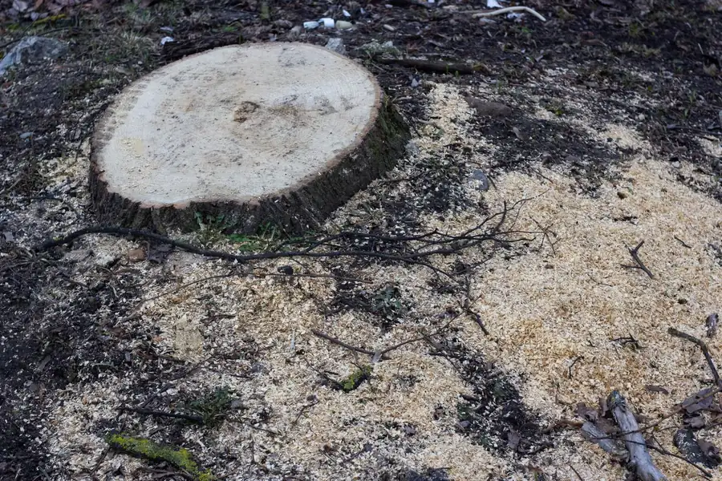

Stumps ground six to twelve inches below grade so you can sod, plant, fence or pour over them — and island sand means the job goes faster than it would on the mainland.

Stump grinding in Galveston, TX turns the leftover from a removal into usable ground. We grind stumps across Galveston Island and the mainland side of the county, from tight East End back yards to open West End lots, taking the stump and the top of the root plate below grade so the spot can be sodded, planted, fenced or built on. Most residential stumps are a same-day job, and on Galveston sand they go faster than almost anywhere else in Texas.
A stump grinder is a wheel of carbide teeth spinning fast enough to chew wood into chips. The operator sweeps it side to side, dropping a few inches with each pass, until the stump is gone to the depth you need.
Before anything spins, we locate what is underground. Irrigation lines, low-voltage lighting, gas service and the shallow utility runs common in older Galveston neighborhoods all sit at grinder depth. On the island there is one more consideration: the seasonal water table can be as shallow as eleven inches, so on a wet week the hole may start taking water partway through. That is normal and does not affect the result.
Afterward you have a hole and a large pile of grindings. Wood expands considerably once chipped, so the pile always looks bigger than the stump did. We either rake it back and crown it slightly to allow for settling, or haul it away.
Mostly they are easier, and it is worth saying why. Galveston Island soil is fine sand with almost no clay in it, so the grinder cuts through the surrounding material with far less resistance than the heavy clay across the causeway. Less resistance means less time and fewer teeth, and that shows up in the price.
The complications are different ones. Island trees develop wide, shallow lateral root plates rather than deep tap roots, because the water table is close and salt sits below it. A live oak stump that looks like a two-foot circle at the surface may have significant lateral roots running out fifteen feet in every direction, close to the surface the whole way. If you are planting or pouring, some of those have to come out too.
The second complication is sand collapse. In loose sand the walls of the grind hole slump inward as you work, which fills the void and makes the operator’s depth reading optimistic. An operator who has only worked clay will call a hole done that is really three inches shallower than it looks.
Chinese tallow is the most common volunteer tree on this island and one of the few species that will genuinely come back from a ground stump. It suckers from remaining lateral root material with real enthusiasm. If the stump you want gone is a tallow, plan on either pulling sprouts through the following season or having the root crown treated at the time of grinding.
| Stump | Typical range | Notes |
|---|---|---|
| Small, under 12 in diameter | $100 – $175 | Usually under an hour |
| Medium, 12–24 in | $150 – $300 | The most common island job |
| Large, 24–40 in | $300 – $500 | Mature live oak territory |
| Full extraction, roots and all | $250 – $500+ | When a slab is going in |
| Grinding done with a removal | Discounted | One trip instead of two |
| Haul-off of grindings | $50 – $150 | Optional |
Diameter sets the base price. After that: access, since a grinder needs a gate opening of about three feet and rear-alley properties in the historic districts sometimes cannot offer one. Then proximity to hard surfaces, because grinding tight against a slab or a fence post means slower, more careful passes. Then depth, which depends on what is going in afterward. And finally whether you want the grindings gone or spread.
Grinding reduces the stump and upper root crown to chips and leaves the deeper lateral roots to decay in place. It is faster, cheaper, and leaves the surrounding yard essentially untouched. For sod, beds, fences and general tidying, this is the right call and covers the large majority of jobs.
Full extraction pulls the stump and the main root mass out entirely, which means machinery, a much larger hole and imported fill. It costs roughly twice as much and tears up more ground. You need it when a foundation or driveway is going over the spot, or when you are planting a replacement tree in exactly the same hole and want clean soil for it.
For most Galveston yards, grinding plus a few inches of topsoil gets you a spot you can plant next weekend. If the stump came from a removal we did, ask about combining the two — see tree removal in Galveston for how the pricing works together.
Most residential stumps in Galveston run $150 to $400. Diameter is the main driver, along with how close the stump sits to a slab, a fence post or a utility line. Galveston sand grinds noticeably faster than the clay on the mainland, which keeps island stump prices at the lower end of the Texas range.
Six to twelve inches below grade for a standard grind, which is enough to lay sod, plant a shrub or run a fence post. If you are pouring a slab or planting a replacement tree in the same hole, we go deeper and take out more of the lateral roots. Tell us the plan for the spot and we will grind to suit it.
Ground below grade, most species will not. The exceptions on this island are Chinese tallow and hackberry, which sucker aggressively from remaining root material. If you had one of those out, expect to pull a few sprouts over the following season, or ask us about treating the root crown at the time of grinding.
You get a pile of wood chips and sand mixed together, and it will be more volume than the stump looked like. We can rake it back into the hole and crown it, which settles over a few months, or haul it off for a small additional charge. On a Galveston lot the mix makes reasonable bed mulch, though it is too coarse for a lawn.
Most residential stumps are done in an afternoon. Tell us what is going in the spot afterward and we will grind it to the right depth.
Call (409) 255-0582 for a Free Estimate